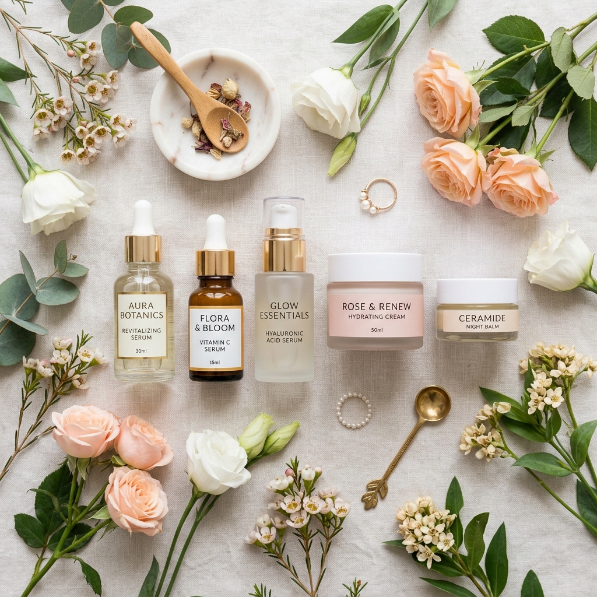

Chăm Sóc Da
Bí quyết giữ lớp nền căng bóng và da không đổ dầu trong mùa hè
Thời tiết nắng nóng luôn là kẻ thù của làn da dầu mụn. Hãy cùng Beauty Cosmetic khám phá 5 bước skincare tối giản giúp kiểm soát bã nhờn nhưng vẫn giữ được độ ẩm tự nhiên cho da...
Đọc tiếp